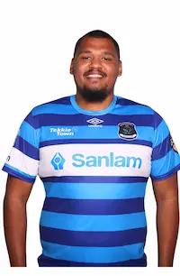

About Me
My name is Kyle and I go by Ky. I was born in South Africa and love learning new things. I enjoy the outdoors, rugby, and working on web development projects. I value family time and am passionate about building creative solutions.
Cape Town, South Africa
South Africa is known for its diverse cultures and landscapes. It features amazing wildlife, rich history, and stunning coastal regions. My favorite part is the community and natural beauty.
